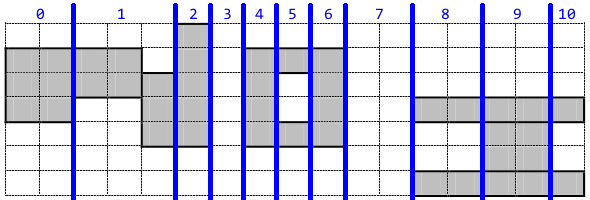

小 E 同学非常喜欢书法，他听说 NOI2013 已经开始了，想题一幅 "NOI" 的字送给大家。
小 E 有一张非常神奇的纸，纸可以用一个 $n$ 行 $m$ 列的二维方格矩阵来表示，为了描述方便，我们定义矩阵左下角方格坐标为 $(1, 1)$，右上角方格坐标为 $(m, n)$。
矩阵的每个方格有一个整数的幸运值。在格子上面写字可以增加大家的幸运度，幸运度的大小恰好是所有被笔写到的方格的幸运值之和。现在你要在上面写上 "N", "O", "I" 三个字母。
下面给出 $3$ 个书法字的定义:
"N" 由若干 ($\geq 3$) 个边平行于坐标轴的矩形组成，设由 $K$ 个矩形组成 (标号 $1 \sim K$)，第 $i$ 个矩形的左下角方格坐标设为 $(L_i, B_i)$，右上角坐标设为 $(R_i, T_i)$，要求满足：
"O" 由一个大矩形 $A$，挖去一个小矩形 $B$ 得到，这两个矩形的边都平行于坐标轴。设大矩形 $A$ 左下角的方格坐标为 $(u, v)$，长为 $W$，宽为 $H$，则小矩形 $B$ 满足左下角方格坐标为 $(u + 1, v + 1)$，长 $W - 2$，宽 $H - 2$。要求满足：
"I" 为 $3$ 个边平行于坐标轴的从下到上的实心矩形组成，从下到上依次标号为 $1, 2, 3$，第 $i$ 个矩形的左下角格子坐标设为 $(P_i, Q_i)$，右上角格子坐标设为 $(G_i, H_i)$，要求满足：
下图是一个 "N", "O", "I" 的例子。

另外，所有画的图形均不允许超过纸张的边界。现在小 E 想要知道，他能画出的最大幸运度是多少。
第一行包含两个正整数 $n, m$ ($n \leq 150; m \leq 500$)，分别表示矩阵的行数和列数。
接下来 $n$ 行，每行有 $m$ 个整数，第 $i + 1$ 行的第 $j$ 个数 $w_{j, n-i+1}$ ($-200 \leq w_{j, n-i+1} \leq 200$) 表示格子 $(j, n - i + 1)$ 的幸运值。
输出一行一个整数 $T$，表示小 E 能够获得的最大幸运度。
可以发现，这个 "NOI" 的定义有些杂乱。
我们来重新梳理一下，通过一个从左向右的扫描线 (Sweepline) 来理解，从而得到更适合机器口味的定义。
首先扫到的是 $\texttt N$ 的左矩形，由于宽度可能大于 $1$，因此可能被扫到多次。记为 $0$ 号步骤。
然后扫到的是一系列 $\texttt N$ 的中矩形，其中第一个中矩形的上端与左矩形的上端平齐，下端高于左矩形。
对于多个中矩形，后一个矩形的上端要在前一个矩形的下端上方或者平齐，各个矩形的下端依次 (非严格) 递减。将这个记为 $1$ 号步骤。
接着将会扫到 $N$ 的右矩形，也有可能扫到多次，要注意右矩形要和最后一个中矩形的下端平齐，上端则高于中矩形。该步骤为 $2$ 号步骤。
注意到 $\texttt N$ 和 $\texttt O$ 之间至少有一个空列，因此下一次扫描线就会碰到这个空列。当然空列也有可能被扫到多次。这个步骤记为 $3$ 号。
紧跟着就是字母 $\texttt O$ 了。首先是 $\texttt O$ 的宽仅为 $1$ 的左边界，只会扫到一次。为 $4$ 号步骤。
继续扫，就会遇到 $\texttt O$ 的中空部分，此时上下宽均为 $1$，可以被扫到多次，记为 $5$ 号步骤。
对称地，字母 $\texttt O$ 的右边界出现，它的宽也是 $1$，因此不会被扫到多次。这个步骤记为 $6$ 号步骤。
然后又是 $\texttt O$ 与 $\texttt I$ 之间的一个或多个空列。记为 $7$ 号步骤。
对于 $\texttt I$，其实和 $\texttt O$ 很类似。
首先，是 $\texttt I$ 的左平行区，但和 $\texttt O$ 不同的是，它可能被扫到多次，这个步骤是 $8$ 号步骤。
然后，是 $\texttt I$ 的中腹区，也可以扫到多次，为 $9$ 号步骤。
最后，是 $\texttt I$ 的右平行区，和左平行区一样，可扫多次，为 $10$ 号步骤。
综上，我们就总结了扫描线扫一个合法 "NOI" 的整个过程，大概示意图如下：
接下来我们就可以考虑 DP 了。记 $f_{co, st, i, j}$ 当前 (右端) 在第 $co$ 列，扫描线到了步骤 $st$，目前的标记行为 $i$ 行与 $j$ 行，所能得到的的最大幸运值 (权值)。
来解释一下标记行：对于步骤 $0, 1, 2, 4, 6, 9$，扫描线扫到的列中，得到的是一些连续的方格，设是从第 $i$ 到第 $j$ 行的，则它们的标记行就为 $i$ 和 $j$ ($i \leq j$)。
对于步骤 $5, 8, 10$，这些列中，得到的都是两个方格，上下各一个。因此它们的标记行就是两个方格的所在行 $i$ 与 $j$ ($i < j$)。
对于步骤 $3, 7$，这些列中，由于它们是空列，因此不需要多余的信息。故此时规定标记行为 $0, 0$。
接下来就可以转移了。对于每个步骤，我们只需枚举它们的标记行，然后计算出上一次可能的标记行，进行 up() 转移即可。
这样一来，$0, 3 \sim 9$ 的转移都可以轻松写出，下面着重要讲的是 $1$ 和 $2$。
ps: 以下规定最上面的一行为 $1$，最下面的一行为 $n$。DP 状态中的 $co$ 维省略。
先来看步骤 $2$，设它的标记行为 $i, j$。首先有 $2$ 对 $2$ 的转移 (多次扫描)，这个不用多说，上一次和这一次的标记行相等。
接下来就是从 $1$ 转移过来了，设上一次的标记行为 $i', j'$，则有 $j = j'; i < i'$。
故这里的 $f_{2, i, j}$ 需要 $f_{1, k, j}$ ($i < k \leq j$) 中的最大值。
因此可以固定 $j$ 再倒着枚举 $i$，这样可以一边更新答案一边维护最大值。
再来看步骤 $1$ 的 $0 \to 1$ 转移。设 $1$ 的标记行为 $i, j$，步骤 $0$ 的标记行为 $i', j'$，则有 $i = i'; j < j'$。
故 $f_{1, i, j}$ 需要 $f_{0, i, k}$ ($j < k \leq n$) 的最大值。因此固定 $i$ 倒着枚举 $j$ 即可。
最后是 $1 \to 1$ 转移。设旧的标记行为 $i', j'$，新的标记行为 $i, j$。则有 $i' \leq i \leq j' + 1 \leq j + 1$。
所以 $f_{1, i, j}$ 需要 $f_{1, k, i' - 1}$ 和 $f_{1, k, j_0}$。因此可以固定维护 $i$ 的最值，外面再套一层最值即可 (或者直接暴力一点，另开一个数组维护前缀后缀最大值也行)。
至于答案的话，只需将最后一个步骤 $f_{10, i, j}$ 转移给答案即可。总时间复杂度 $O \left( 10 n^2 m \right)$。
#include <bits/stdc++.h>
#define N 160
#define M 510
#define FF2 for (int i = 1; i < R; ++i) for (int j = i + 1; j <= R; ++j)
#define FF3 for (int i = 1; i < R - 1; ++i) for (int j = i + 2; j <= R; ++j)
typedef int (*fy)[N][N];
const int INF = 0x3f3f3f3f;
int R, C, ans = -INF;
int w[N][M], A[N];
int dp[2][11][N][N];
fy cur = *dp, nxt = dp[1];
inline void up(int &x, const int y) {x < y ? x = y : 0;}
inline int solid(int r1, int r2, int c) {return w[r2][c] - w[r1 - 1][c];}
inline int side(int r1, int r2, int c) {return w[r2][c] - w[r2 - 1][c] + w[r1][c] - w[r1 - 1][c];}
// 0 : |
void transNL(int c) {FF2 up(nxt[0][i][j], std::max(0, cur[0][i][j]) + solid(i, j, c));}
// 1 : |\.
void transNM(int c) {
int i, j, t; memset(A, 192, R + 1 << 2);
// from |
for (i = 1; i <= R; ++i)
for (j = R; j >= i; --j)
up(nxt[1][i][j], A[i] + solid(i, j, c)), up(A[i], cur[0][i][j]);
// from |\.
memset(A, 192, R + 1 << 2);
for (i = 1; i <= R; ++i)
for (t = A[i - 1], j = i; j <= R; ++j)
up(A[j], cur[1][i][j]), up(t, A[j]), up(nxt[1][i][j], t + solid(i, j, c));
}
// 2 : N
void transNR(int c) {
int i, j; memset(A, 192, R + 1 << 2);
for (i = R; i; --i)
for (j = i; j <= R; ++j)
up(nxt[2][i][j], std::max(A[j], cur[2][i][j]) + solid(i, j, c)), up(A[j], cur[1][i][j]);
}
// 3 : N_
void transNB(int c) {FF2 up(nxt[3][0][0], std::max(cur[2][i][j], cur[3][0][0]));}
// 4 : N |
void transOL(int c) {FF3 up(nxt[4][i][j], cur[3][0][0] + solid(i, j, c));}
// 5 : N |=
void transOM(int c) {FF3 up(nxt[5][i][j], std::max(cur[4][i][j], cur[5][i][j]) + side(i, j, c));}
// 6 : N O
void transOR(int c) {FF3 up(nxt[6][i][j], cur[5][i][j] + solid(i, j, c));}
// 7 : N O_
void transOB(int c) {FF3 up(nxt[7][0][0], std::max(cur[6][i][j], cur[7][0][0]));}
// 8 : N O =
void transIL(int c) {FF3 up(nxt[8][i][j], std::max(cur[7][0][0], cur[8][i][j]) + side(i, j, c));}
// 9 : N O =|
void transIM(int c) {FF3 up(nxt[9][i][j], std::max(cur[8][i][j], cur[9][i][j]) + solid(i, j, c));}
// 10 : N O I
void transIR(int c) {FF3 up(nxt[10][i][j], std::max(cur[9][i][j], cur[10][i][j]) + side(i, j, c)), up(ans, nxt[10][i][j]);}
int main() {
int i, j, v;
scanf("%d%d", &R, &C);
for (i = 1; i <= R; ++i)
for (j = 1; j <= C; ++j)
scanf("%d", &v), w[i][j] = w[i - 1][j] + v;
memset(nxt, 192, sizeof *dp);
for (j = 1; j <= C; ++j) {
std::swap(cur, nxt); memset(nxt, 192, sizeof *dp);
transNL(j); transNM(j); transNR(j); transNB(j);
transOL(j); transOM(j); transOR(j); transOB(j);
transIL(j); transIM(j); transIR(j);
}
printf("%d\n", ans);
return 0;
}
坑1：注意对列使用滚动数组以节约空间。
坑2：只有 $4$ 号步骤和 $6$ 号步骤是只会被扫到一次的，因此对于其它所有步骤 (包括空列)，都会被扫到多次。因此转移时需要对同种步骤的答案取 $\max$。
坑3：对 $5, 8, 10$ 号步骤，由于它们只有两个方格，因此它们对幸运值的贡献是两个数 (side) 而不是一个区间 (solid)。